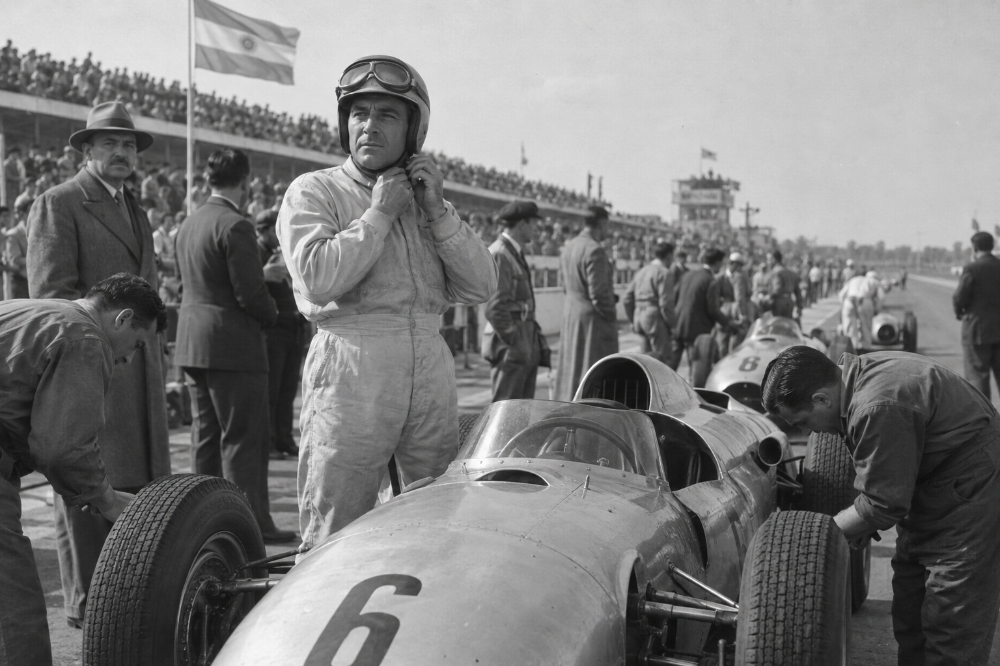

Historias · Capítulo 01
Fangio
El hombre que sabía esperar
Por Martín Estévez · 12 min de lectura“No se gana una carrera en la primera curva, pero se puede perder.”
Antes de ser el campeón que Europa llamó Maestro, Juan Manuel Fangio fue mecánico. Aprendió a escuchar el metal en un taller de Balcarce, a entender cuándo una máquina pedía más y cuándo convenía dejarla respirar.
Ese conocimiento no era romántico: era supervivencia. En las carreras de ruta, una falla a cientos de kilómetros de asistencia podía terminar el día, la temporada o algo peor. Fangio construyó ahí su método: velocidad con margen, precisión sin espectáculo.
Corría como trabajaba: sin desperdiciar un movimiento.
La ruta como escuela
El Gran Premio del Norte fue una prueba desmesurada: de Buenos Aires a Lima y regreso, por caminos de tierra, cornisa y altura. Fangio ganó después de casi dos semanas de carrera. No había telemetría ni radio: había oído, manos y memoria.
La carrera que explica todo
Nürburgring
1957
Tras una parada lenta quedó lejos. En vez de aceptar el segundo puesto, llevó cada curva un poco más allá. Alcanzó a Collins y Hawthorn a falta de dos vueltas. Tenía 46 años. Fue su última victoria y su quinto título.
Lo que dejó
Su legado no cabe en cinco campeonatos. Fangio convirtió la inteligencia de carrera en una forma de identidad argentina: observar, improvisar, cuidar la herramienta y atacar cuando el momento se abre.
En Balcarce todavía se habla de él sin distancia. No como una estatua, sino como el vecino que arreglaba autos y terminó enseñándole al mundo otra manera de manejar.